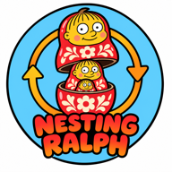

TRACE · each step: thought, code change, DoD result, TraceLoss V
GOAL (the one-line prompt)
DEFINITION OF DONE · generated by Nemotron-3-Super

loss = 1 − V.
Hidden tests, never shown to the agent or the DoD generator, decide success.Shown episodes are the first 10 seeds per task, replayed exactly from runs/episodes.json. The critic steers; only the independent pytest verifier sets VERIFIED. Keys: ← → space Home
exercise = "math exercise". Every explicit equality like 178 × 90 = 16020 is recomputed with exact rational arithmetic in Python. This checks local step validity, not whether the problem was modelled right.